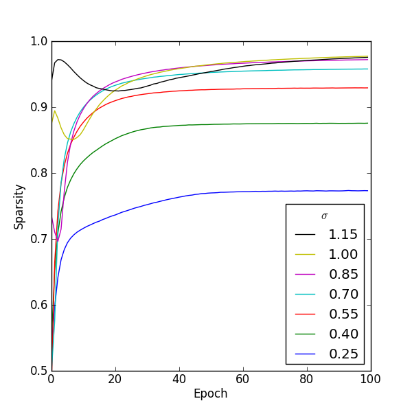
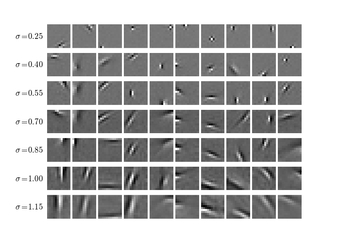

GRBM Sparsity
An Observation
The variance of the visible units of a Gaussian RBM with rectified linear hidden units affects the sparsity1 of the representation learned when the model is trained with contrastive divergence.
Demonstration
To demonstrate this effect I trained a model with 400 hidden units on natural image patches. (Source code.) For each training run the standard deviation of the visible units (σ) was fixed. The visible units were sampled from during training.2

Figure 1: Figure 1
Figure 1 (full size) shows how the sparsity in the hidden units changes during training for several values of σ. It's clear that for this model increasing σ increases the sparsity of the learned representation.
{kind=link}

Figure 2: Figure 2
In figure 2 (full size) each row shows the first ten features learned for a particular setting of σ. The rows are in order of ascending variance or equivalently ascending sparsity. Features toward the top of this figure tend to be short edge detectors or point filters. Moving down the figure the point filters disappear and the edge detectors become longer and broader.
{kind=link}
Possible Implications
When an RBM is used as an unsupervised feature extractor it is sometimes desirable to learn a sparse representation. One way this can be achieved is by adding an extra term to the optimization objective. An alternative is to add noise to the visible units during training and think of the visible variance as a meta-parameter for controlling sparsity.
If instead the objective is to learn a good generative model it makes sense to learn the visible variances. In such a setting, the observation made here suggests that the learning rate and initial values chosen for the variances could have an appreciable effect on the learned model.
For example, if the variances are initialized to relatively high values and a small learning rate is applied to them, then I would expect the sampling noise present during the early part of training to induce more sparsity in the hidden units than would be the case with smaller initial values and a bigger learning rate.3
Footnotes
For a model with rectified linear hidden units sparsity is the fraction of hidden units that output a zero, averaged over training cases.
If the visible units are not sampled then the variance still affects sparsity but in a less predictable way. Furthermore, the features learned are more noisy, less local and harder to interpret as meaningful features such as edge detectors.
Perhaps it is this phenomenon that Alex Krizhevsky is describing in Learning Multiple Layers of Features from Tiny Images: "The trick to doing this correctly is to set the learning rate of the standard deviations to a sufficiently low value. In our experience, it should be about 100 to 1000 times smaller than the learning rate of the weights. Failure to do so produces a lot of point filters that never evolve into edge filters."